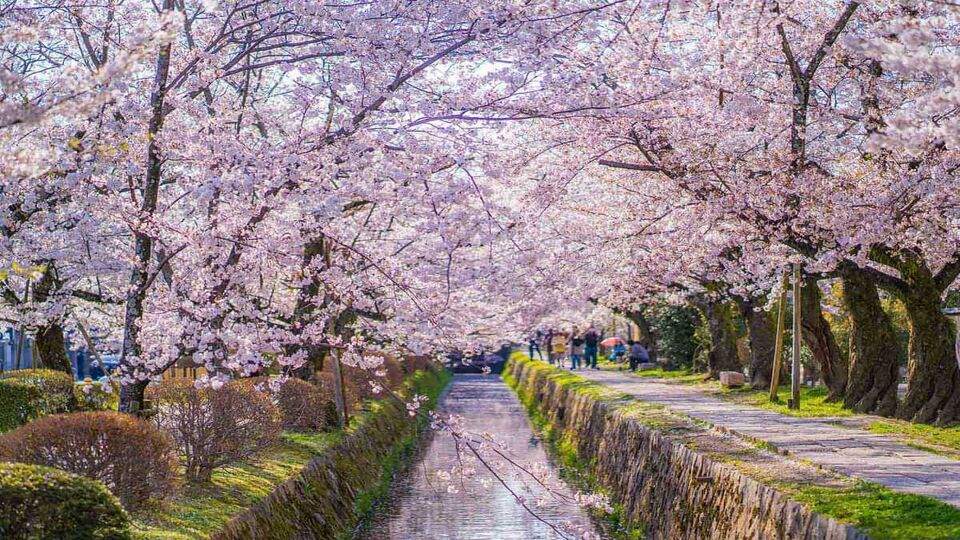
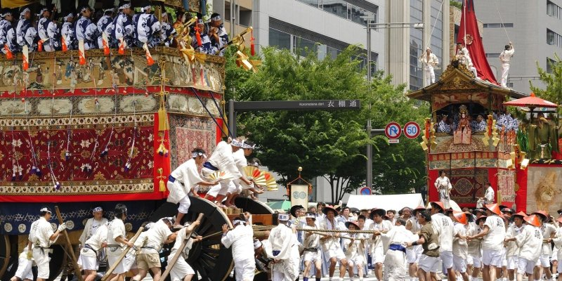
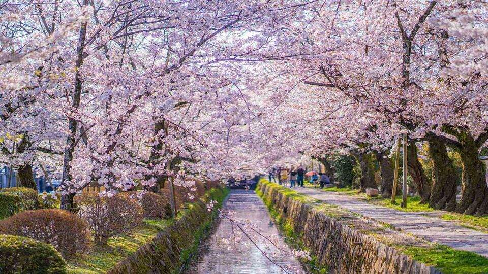
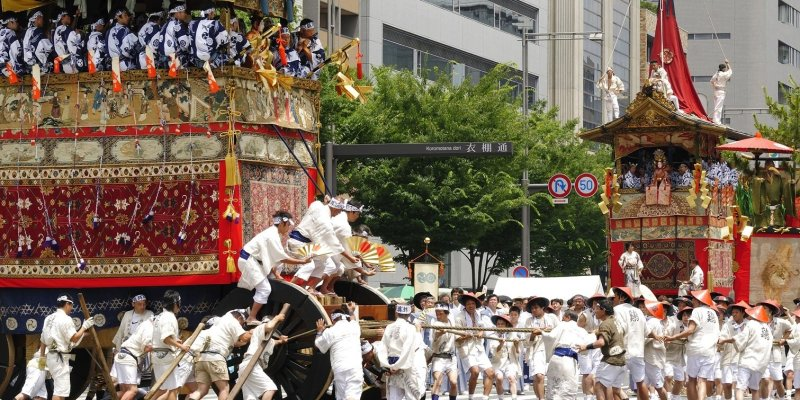

Cherry Blossom Viewing
Experience the beautiful cherry blossoms in spring across Kyoto's parks and temples.
Gion Matsuri Festival
The Gion Matsuri Festival is a cultural highlight every summer in Kyoto.
Experience the beautiful cherry blossoms in spring across Kyoto's parks and temples.
The Gion Matsuri Festival is a cultural highlight every summer in Kyoto.
